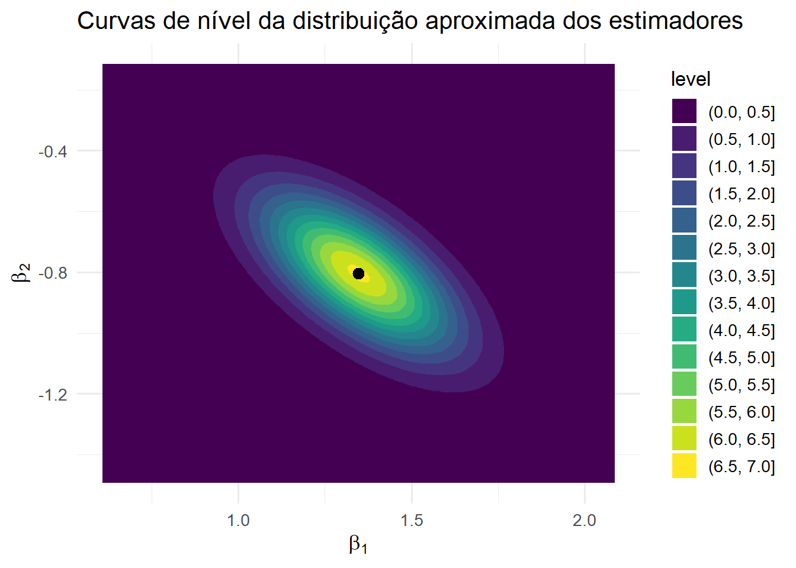
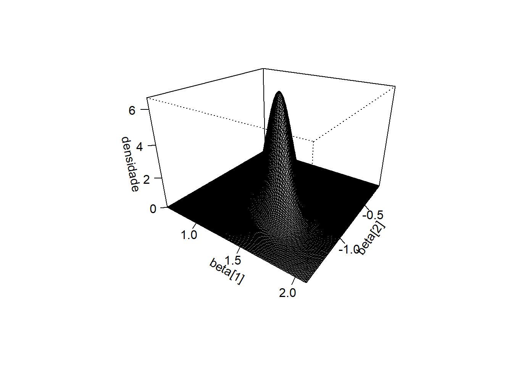

Com os parâmetros estimados por MQO, passamos naturalmente do ajuste para a inferência. Em regressão múltipla, a análise inferencial costuma girar em torno de três questões principais (Kutner et al., 2005; Montgomery; Peck; Vining, 2021).
A primeira diz respeito aos efeitos individuais: dado todo o restante do modelo, o coeficiente associado a \(x_j\) é compatível com a hipótese de ser igual a zero? Essa é a interpretação condicional típica do MRLM, na qual buscamos isolar o efeito de cada variável mantendo as demais fixas.
A segunda envolve efeitos conjuntos: grupos de variáveis, como um conjunto de indicadores econômicos ou um bloco de variáveis categóricas, contribuem de forma relevante para explicar a variável resposta quando considerados em conjunto?
A terceira questão está ligada à precisão das estimativas e à previsão: qual é o grau de incerteza associado aos coeficientes estimados, quão precisa é a média condicional \(E(Y \mid x_0)\) em um novo ponto \(x_0\), e qual deve ser a amplitude de um intervalo para uma nova observação \(Y_0\) gerada sob as mesmas condições?
Para responder a essas perguntas, trabalharemos no contexto do Modelo de Regressão Linear Múltipla Normal (MRLM Normal) (Seber; Lee, 2003), em que
em que \(\mathbf{H}=\mathbf{X}(\mathbf{X}^\top\mathbf{X})^{-1}\mathbf{X}^\top\) é a matriz chapéu e \(\mathbf{M}=\mathbf{I}_n-\mathbf{H}\) é a matriz dos resíduos. Essas matrizes são simétricas, idempotentes e ortogonais entre si, propriedades fundamentais na interpretação geométrica do modelo.
De forma expandida, a matriz \(\mathbf{H}\) pode ser escrita como
Assim como a matriz \(\mathbf{X}\) organiza as variáveis explicativas, as matrizes \(\mathbf{H}\) e \(\mathbf{M}\) organizam as projeções associadas ao modelo, sendo fundamentais para compreender o comportamento dos valores ajustados, dos resíduos e dos diagnósticos.
A partir desses resultados, obtemos três propriedades fundamentais.
Estimadores dos coeficientes normalmente distribuídos
Cada coeficiente estimado segue uma distribuição normal centrada no valor verdadeiro, com variância determinada pela variabilidade dos erros e pela estrutura das variáveis explicativas.
A soma de quadrados dos resíduos segue uma distribuição qui-quadrado
Independência entre estimadores e variância dos erros
O vetor \(\hat{\boldsymbol{\beta}}\) e a soma de quadrados dos resíduos \(SQ_{Res}\) são independentes. Esse resultado decorre da ortogonalidade entre o espaço gerado pelas variáveis explicativas e o seu complemento.
Esses três resultados constituem a base da inferência estatística no MRLM. Eles permitem
construir estatísticas \(t\) e \(F\) com distribuições exatas em amostras finitas
obter intervalos de confiança para coeficientes e para a média condicional
construir intervalos de predição para novas observações
Todas essas conclusões devem ser interpretadas condicionalmente às variáveis incluídas no modelo. Em particular, dizer que um coeficiente é significativo significa que, mantendo as demais variáveis fixas, a variação em \(x_j\) está associada a uma mudança média em \(Y\) que dificilmente pode ser atribuída apenas ao acaso. Isso difere da análise de correlação simples, que não controla o efeito das demais variáveis explicativas.
15.2 Testes individuais para coeficientes
O primeiro passo da inferência no MRLM é avaliar, para cada coeficiente, se há evidência de que o seu valor populacional difere de zero condicionalmente às demais variáveis. Em outras palavras, perguntamos: dado tudo o que já está no modelo, a variável \(x_j\) ainda acrescenta um efeito linear sobre a média de \(Y\)?
para \(j=1,\dots,p\). O intercepto \(\beta_0\) pode ser testado pela mesma lógica, embora sua interpretação seja particular.
O parâmetro \(\beta_0\) representa o valor esperado de \(Y\) quando todas as variáveis explicativas são iguais a zero. Em alguns contextos, isso pode ser informativo, como quando zero tem significado natural. Em outros, pode não ter interpretação prática direta.
Uma prática comum é centrar as variáveis explicativas, subtraindo suas médias. Nesse caso, o intercepto passa a representar a média condicional de \(Y\) no ponto central do espaço das covariáveis. Essa transformação melhora a interpretação, sem alterar testes, previsões ou a qualidade do ajuste.
15.2.1 Construção da estatística de teste marginal
Considere \(v_{jj}\) o elemento da diagonal de \((\mathbf{X}^\top\mathbf{X})^{-1}\) associado ao coeficiente \(\beta_j\). Sob o MRLM Normal,
A estatística de teste para o teste \(H_0: \beta_j = \beta_{j,0}\) vs \(H_0: \beta_j \neq \beta_{j,0}\) é dada por
\[
t_j=\frac{\hat{\beta}_j-\beta_{j,0}}{\hat{\sigma}\sqrt{v_{jj}}}.
\] No teste usual \(H_0: \beta_{j}=0\), logo temos \(\beta_{j,0}=0\) e
\[
t_j=\frac{\hat{\beta}_j}{\hat{\sigma}\sqrt{v_{jj}}}.
\]vSe \(H_0\) é verdadeira e as hipóteses do MRLM Normal são satisfeitas, então
\[
t_j\sim t_{n-p-1}.
\]
O denominador dessa estatística mede a incerteza associada ao coeficiente estimado e depende diretamente da estrutura da matriz \(\mathbf{X}\).
Quando a variável \(x_j\) apresenta forte colinearidade com outras variáveis explicativas, a matriz \((\mathbf{X}^\top\mathbf{X})^{-1}\) tende a amplificar \(v_{jj}\), aumentando o erro-padrão. Como consequência, a estatística \(t_j\) diminui, reduzindo o poder do teste e dificultando a detecção de efeitos reais.
15.2.2 Interpretação e decisão
No uso mais comum, aplicamos um teste bicaudal e rejeitamos \(H_0\) se \(|t_j|>t_{\alpha/2,\,n-p-1}\) ou, de forma equivalente, se o valor-\(p\) for menor que \(\alpha\).
Esse teste deve ser interpretado de forma condicional às demais variáveis do modelo. Ele avalia o efeito de \(x_j\) mantendo as demais variáveis fixas. Essa interpretação difere da regressão simples entre \(Y\) e \(x_j\), na qual não há controle para outros fatores.
Na regressão simples, se \(x_j\) estiver correlacionado com variáveis omitidas que também influenciam \(Y\), o efeito estimado pode aparecer inflado ou atenuado. No MRLM, o objetivo é isolar o efeito de \(x_j\) dentro do conjunto de variáveis consideradas.
15.2.3 Testes individuais gerais e relação com a distribuição F
Em alguns casos, queremos testar se \(\beta_j\) é igual a um valor específico \(d_j\). Nesse caso, consideramos
Sob normalidade, as projeções associadas a \(\mathbf{H}\) e \(\mathbf{M}\) são independentes, o que implica independência entre \(\hat{\beta}_j\) e \(SQ_{Res}\).
leva, ao substituir \(\sigma\) por \(\hat{\sigma}\), à distribuição \(t_{n-p-1}\).
15.3 Testes conjuntos e hipóteses lineares gerais
Enquanto os testes \(t\) verificam hipóteses sobre coeficientes individuais, na prática frequentemente queremos saber se um grupo de variáveis explicativas, considerado em conjunto, exerce efeito significativo sobre a resposta.
Por exemplo: todas as variáveis indicadoras de escolaridade, tomadas em bloco, influenciam o rendimento escolar? Ou ainda: variáveis macroeconômicas acrescentam explicação além das variáveis demográficas?
Essas questões levam a uma formulação mais geral, conhecida como teste de hipóteses lineares gerais, que engloba todos os testes conjuntos no MRLM Normal.
(a) Formulação geral.
A hipótese nula estabelece \(q\) restrições lineares sobre os parâmetros do modelo:
em que \(C\) é uma matriz \(q\times (p+1)\) de posto \(q\), cujas linhas representam restrições independentes, e \(\mathbf{d}\) é um vetor fixo de dimensão \(q\).
Alguns exemplos ajudam a compreender a construção.
Bloco nulo. Queremos testar se um grupo de coeficientes é nulo, por exemplo
\[
H_0:\ \beta_1=\beta_3=\beta_4=0.
\]
Aqui \(q=3\) e a matriz \(C\) seleciona exatamente esses coeficientes:
Se o intercepto também estiver entre os parâmetros testados, por exemplo \(H_0:\ \beta_0=\beta_2=\beta_4=0\), a matriz \(C\) incluiria a primeira coluna:
A matriz \(C\) seleciona ou combina linearmente os coeficientes de interesse, enquanto \(\mathbf{d}\) representa o valor esperado sob \(H_0\). Essa formulação abrange desde hipóteses simples até combinações mais complexas de parâmetros.
(b) Estatística de Wald.
A estatística de teste generaliza a lógica do teste \(t\), sendo conhecida como estatística de Wald (Rencher; Christensen, 2012). Sob o MRLM Normal,
O numerador mede a distância entre \(C\hat{\boldsymbol{\beta}}\) e \(\mathbf{d}\), levando em conta a variabilidade da estimativa. Essa quantidade é comparada com a variabilidade residual média no denominador.
Quando \(q=1\), recuperamos o caso individual, pois \(t_j^2=F_{1,\,n-p-1}\). Para \(q>1\), obtemos a generalização para testes conjuntos.
(c) Versão por somas de quadrados (modelos aninhados).
Uma interpretação bastante intuitiva é obtida comparando dois modelos aninhados:
Modelo completo: inclui todas as variáveis.
Modelo reduzido: impõe as restrições de \(H_0\).
Denotando por \(SQ_R\) a soma de quadrados da regressão do modelo completo e por \(SQ_R^\ast\) a do modelo reduzido, temos
Para \(q=1\), o \(R^2\) parcial coincide com o quadrado da correlação parcial entre \(Y\) e \(x_j\).
(g) Pressupostos e robustez.
Sob normalidade, a distribuição \(F\) é exata em amostras finitas.
Em amostras grandes, a aproximação continua válida mesmo sem normalidade.
Na presença de heterocedasticidade, devem-se usar versões robustas dos erros-padrão.
Em séries temporais, métodos como HAC ou GLS são mais adequados.
(h) Ideias de demonstração.
Sob \(H_0\), \(C\hat{\boldsymbol{\beta}}-\mathbf{d}\) tem distribuição normal multivariada.
A forma quadrática correspondente segue uma distribuição qui-quadrado com \(q\) graus de liberdade.
Essa quantidade é independente de \(SQ_{Res}\).
O quociente dessas quantidades leva à distribuição \(F_{q,n-p-1}\).
15.4 ANOVA em regressão múltipla e teste global
A análise de variância (ANOVA) em regressão múltipla organiza a variabilidade da resposta \(Y\) em duas parcelas: a parte explicada pelo modelo e a parte não explicada, associada aos resíduos. Essa decomposição, além de oferecer um retrato sintético do ajuste do modelo, fornece a base para o teste global do modelo.
Em termos práticos, trata-se de avaliar se pelo menos um coeficiente, além do intercepto, é diferente de zero. Se isso ocorrer, o modelo de regressão fornece mais informação do que simplesmente usar a média \(\bar{y}\) como preditor.
(a) Decomposição da soma de quadrados (forma escalar).
Seja \(\bar{y}=\tfrac{1}{n}\sum_{i=1}^n y_i\). A variabilidade total da resposta em torno da média pode ser decomposta em
mostra que a variabilidade total se decompõe em uma parte explicada pelo modelo e uma parte residual.
(b) Forma matricial e papel das projeções.
Essa decomposição também pode ser expressa em notação matricial.
Definindo \(J=\mathbf{1}\mathbf{1}^\top/n\), que projeta no subespaço gerado pelo vetor de uns, \(\mathbf{H}=\mathbf{X}(\mathbf{X}^\top\mathbf{X})^{-1}\mathbf{X}^\top\) e \(M=I_n-H\), temos
Como \(I_n-J=(H-J)+M\) e os subespaços associados a \((H-J)\) e \(M\) são ortogonais, segue que \(SQ_T=SQ_R+SQ_{Res}\).
Geometricamente, \((H-J)\mathbf{Y}\) representa a parte de \(\mathbf{Y}\) explicada pelas variáveis explicativas além da constante, enquanto \(M\mathbf{Y}\) corresponde ao vetor de resíduos.
(c) Graus de liberdade e médias quadráticas.
Com intercepto no modelo, temos \(\operatorname{rank}(\mathbf{X})=p+1\):
Se \(F\) assume valores suficientemente elevados, ou se o valor-\(p\) é pequeno, concluímos que o modelo como um todo contribui para explicar a variabilidade de \(Y\).
(e) Relação com\(R^2\) e tamanho do modelo.
O coeficiente de determinação, usualmente denotado por \(R^2\), é
\[
R^2=\frac{SQ_R}{SQ_T}.
\]
Em termos de \(R^2\), a estatística \(F\) pode ser escrita como
\[
F=\frac{R^2/p}{(1-R^2)/(n-p-1)}.
\]
Essa expressão mostra que o teste global leva em conta não apenas o valor de \(R^2\), mas também o número de preditores e o tamanho da amostra. A mesma elevação em \(R^2\) tem impacto menor quando \(p\) é grande ou quando \(n\) é pequeno.
Para comparação entre modelos de tamanhos diferentes, medidas como \(\bar{R}^2\), AIC ou BIC são mais adequadas.
(f) Consistência com os testes conjuntos.
O teste global é um caso particular dos testes lineares gerais, no qual a matriz \(C\) impõe que todos os coeficientes não associados ao intercepto sejam nulos.
Quando há apenas uma variável explicativa, a equivalência \(F_{1,n-2}=t_{n-2}^2\) mostra a coerência entre o teste global e o teste \(t\) individual.
(g) Questões práticas e variações.
Modelo sem intercepto: a decomposição padrão muda e a interpretação de \(SQ_R\) e \(R^2\) deve ser ajustada.
Multicolinearidade: o teste global pode ser significativo mesmo quando testes individuais não são, pois avalia a contribuição conjunta das variáveis.
(h) O que o\(F\) global testa e o que não testa.
O teste global responde se o modelo, como um todo, é útil.
Ele não identifica quais variáveis são relevantes individualmente; para isso utilizamos os testes \(t\) e testes conjuntos específicos.
É possível obter um \(F\) significativo com coeficientes individuais não significativos, especialmente na presença de multicolinearidade.
(i) Ideias de demonstração.
Sob o MRLM Normal, \((H-J)\mathbf{Y}\) e \(M\mathbf{Y}\) são projeções ortogonais e, portanto, independentes.
O quociente das médias quadráticas leva à distribuição \(F_{p,n-p-1}\).
A identidade \(SQ_T=SQ_R+SQ_{Res}\) decorre de \(I_n-J=(H-J)+M\) e da ortogonalidade das projeções.
15.5 Intervalos de confiança para coeficientes e região conjunta
Nas seções anteriores abordamos testes de hipóteses sobre os coeficientes do MRLM. Outra forma de inferência, frequentemente preferida em relatórios e aplicações, é a construção de intervalos de confiança.
Enquanto os testes levam a uma decisão pontual, os intervalos fornecem uma faixa de valores plausíveis para os parâmetros, permitindo interpretar não apenas se um efeito existe, mas também sua magnitude e a incerteza associada.
15.5.1 Intervalo individual para um coeficiente
Para construir intervalos de confiança individuais para \(\beta_j\), é necessário estimar a variância do estimador \(\hat{\beta}_j\).
Seja \(v_{jj}\) o elemento da diagonal de \((\mathbf{X}^\top\mathbf{X})^{-1}\) correspondente a \(\beta_j\). A variância teórica de \(\hat{\beta}_j\) é \(\sigma^2 v_{jj}\), sendo estimada por \(\hat{\sigma}^2 v_{jj}\), onde
Esse intervalo indica a faixa de valores plausíveis para \(\beta_j\) considerando a incerteza amostral. Se o intervalo contém o valor zero, isso sugere que o efeito de \(x_j\) pode não ser estatisticamente distinto de nulo, embora a decisão formal deva ser feita por meio de um teste de hipóteses.
Cada intervalo individual pode ser visto como a projeção, sobre o eixo de \(\beta_j\), da região conjunta de confiança em \(\mathbb{R}^{p+1}\), apresentada a seguir.
15.5.2 Intervalos simultâneos e região conjunta
Quando consideramos simultaneamente todos os coeficientes do vetor \(\boldsymbol{\beta}\), a generalização natural é a região de confiança conjunta elipsoidal, definida por
Essa desigualdade descreve um elipsoide centrado em \(\hat{\boldsymbol{\beta}}\), cuja forma e orientação dependem da matriz \((\mathbf{X}^\top\mathbf{X})^{-1}\). Dentro desse elipsoide encontram-se, com probabilidade \((1-\alpha)\), os vetores de parâmetros plausíveis à luz dos dados.
Enquanto os intervalos individuais tratam cada parâmetro separadamente, a região conjunta incorpora as covariâncias entre os estimadores. Isso é particularmente relevante em situações de multicolinearidade, nas quais o elipsoide tende a se alongar em determinadas direções, refletindo que diferentes combinações de coeficientes podem produzir ajustes semelhantes.
Geometricamente, essa construção é a contrapartida, no espaço dos parâmetros, do princípio de decomposição da variância visto na ANOVA: a comparação entre variabilidade explicada e variabilidade residual, agora em um contexto multivariado.
A construção computacional dessa região pode ser entendida geometricamente a partir da matriz de variância-covariância dos estimadores. No caso bidimensional, queremos construir os pontos da elipse associados à região conjunta de confiança. Para isso, começamos com um círculo unitário parametrizado por
\[
\mathbf{A}\mathbf{u}(\theta)
\] transforma o círculo unitário em uma elipse centrada na origem.
Finalmente, multiplicamos essa transformação por um fator associado ao nível de confiança e transladamos a figura para o centro \(\hat{\boldsymbol{\beta}}\). Assim, os pontos da região conjunta podem ser escritos como
onde \(c\) depende do nível de confiança escolhido. Quando usamos a distribuição \(F\),
\[
c
=
\sqrt{
q\,
F_{1-\alpha;\,q,\,n-p-1}
},
\]
em que \(q\) representa o número de parâmetros considerados conjuntamente.
No código a seguir:
circulo representa os pontos do círculo unitário;
chol(V_beta) realiza a decomposição de Cholesky da matriz de covariância;
e raio controla o tamanho da região de confiança.
15.5.3 Visualização geométrica da região conjunta de confiança
A região conjunta de confiança pode ser visualizada de forma mais simples quando observamos apenas dois coeficientes por vez. Nesse caso, o elipsoide em dimensão maior reduz-se a uma elipse no plano.
O objetivo da figura é ilustrar graficamente a diferença entre intervalos marginais e região conjunta.
Figura 15.1: Intervalos marginais e região conjunta de confiança para dois coeficientes.
Na figura, a elipse representa a região conjunta de confiança para \((\beta_1,\beta_2)\). O retângulo tracejado representa a combinação dos intervalos marginais individuais de \(\beta_1\) e \(\beta_2\).
A comparação visual mostra que a região conjunta não é simplesmente a justaposição dos intervalos individuais. A elipse incorpora a covariância entre os estimadores, enquanto os intervalos marginais analisam cada coeficiente separadamente.
Quando há correlação entre \(\hat{\beta}_1\) e \(\hat{\beta}_2\), a elipse tende a ficar inclinada. Essa inclinação indica que certas combinações dos coeficientes são mais plausíveis do que outras.
15.5.4 Curvas de nível da distribuição aproximada de dois estimadores
Para visualizar essa ideia, podemos representar a distribuição aproximada de dois coeficientes estimados. As curvas de nível da densidade Normal bivariada ajudam a compreender por que as regiões de confiança conjuntas assumem forma elíptica.

Figura 15.2: Curvas de nível da distribuição Normal bivariada aproximada de dois estimadores.
As curvas de nível representam pontos com a mesma densidade. A forma elíptica aparece porque estamos visualizando uma distribuição Normal bivariada. Quanto mais concentradas as curvas em torno de \((\hat{\beta}_1,\hat{\beta}_2)\), menor é a incerteza associada às estimativas.
15.5.5 Superfície da densidade Normal bivariada
A mesma distribuição pode ser representada como uma superfície tridimensional. Essa visualização destaca o ponto de maior densidade, localizado em torno das estimativas dos coeficientes.

Figura 15.3: Superfície da densidade Normal bivariada aproximada de dois estimadores.
A superfície mostra a mesma informação das curvas de nível, mas em três dimensões. A região mais alta corresponde aos valores mais plausíveis para os coeficientes, enquanto regiões mais afastadas apresentam menor densidade.
15.5.6 Correções simultâneas e observações práticas
Ao construir intervalos de confiança individuais para vários coeficientes, cada intervalo possui nível de confiança \((1-\alpha)\). No entanto, ao considerar todos simultaneamente, a probabilidade de que pelo menos um deles não contenha o valor verdadeiro aumenta. Esse fenômeno é conhecido como erro tipo I global.
Uma forma simples de controlar esse erro é a correção de Bonferroni. Se desejamos manter o nível global de significância em \(\alpha\), utilizamos um nível individual \(\alpha'=\alpha/(p+1)\) e construímos os intervalos como
Com esse ajuste, garantimos que a probabilidade de todos os intervalos conterem simultaneamente os valores verdadeiros dos parâmetros seja, no mínimo, \((1-\alpha)\).
Essa correção é conservadora, pois produz intervalos mais largos. Em contrapartida, fornece controle rigoroso do erro tipo I global, o que é importante em análises com múltiplas inferências.
Em termos práticos:
Intervalos individuais são adequados quando o número de parâmetros é pequeno ou quando o foco é interpretação direta.
Correções de Bonferroni ou regiões conjuntas são preferíveis quando há múltiplas inferências simultâneas.
Intervalos mais largos refletem maior cautela na inferência, e não necessariamente falta de qualidade do modelo.
A escolha entre essas abordagens envolve um equilíbrio entre precisão estatística, clareza interpretativa e objetivo da análise.
Como \(\hat{\sigma}^2\) é independente de \(\hat{\boldsymbol{\beta}}\) sob normalidade, o quociente entre as duas quantidades leva à distribuição
\[
F_{p+1,\,n-p-1},
\]
o que justifica a desigualdade que define a região elipsoidal conjunta.
Os intervalos marginais individuais são obtidos como projeções unidimensionais dessa região multidimensional.
15.6 Intervalos para a média condicional e para predição
Em muitas aplicações, não basta apenas testar se um efeito existe. É igualmente importante quantificar a incerteza associada às estimativas obtidas. Em particular, duas perguntas são centrais: qual é o valor médio esperado de \(Y\) para um determinado conjunto de covariáveis e qual é a variabilidade associada a uma nova observação nesse mesmo ponto?
No contexto do MRLM Normal, essas duas questões levam a construções distintas. Por um lado, temos o intervalo para a média condicional \(E(Y\mid x_0)\), que reflete apenas a incerteza na estimação da média. Por outro, temos o intervalo de predição para uma nova observação \(Y_0\), que incorpora tanto a incerteza da média quanto a variabilidade intrínseca do erro aleatório.
Seja \(x_0=(1, x_{01},x_{02},\dots,x_{0p})^\top\) o vetor de covariáveis associado ao ponto de interesse. O valor ajustado pelo modelo é dado por \[
\hat{y}_0 = x_0^\top \hat{\boldsymbol{\beta}}.
\]
A variância de \(\hat{y}_0\), condicionalmente à matriz de regressoras, é \[
\operatorname{Var}(\hat{y}_0\mid \mathbf{X}) = \sigma^2\, x_0^\top (\mathbf{X}^\top \mathbf{X})^{-1} x_0,
\] sendo estimada por \(\hat{\sigma}^2 x_0^\top (\mathbf{X}^\top \mathbf{X})^{-1} x_0\), onde \[
\hat{\sigma}^2=\frac{SQ_{Res}}{n-(p+1)}.
\]
Assim, o intervalo de confiança para a média condicional é \[
\hat{y}_0 \;\pm\; t_{\alpha/2,\,n-(p+1)}\;\hat{\sigma}\,\sqrt{x_0^\top (\mathbf{X}^\top \mathbf{X})^{-1} x_0}.
\]
Esse intervalo tende a ser relativamente estreito, pois reflete apenas a incerteza associada à estimação da média.
Para uma nova observação \(Y_0\) no ponto \(x_0\), temos \[
Y_0 = x_0^\top \boldsymbol{\beta} + \varepsilon_0,
\] com \(\varepsilon_0\sim N(0,\sigma^2)\) independente de \(\hat{\boldsymbol{\beta}}\). Nesse caso, a variância do erro de predição é \[
\operatorname{Var}(Y_0-\hat{y}_0\mid \mathbf{X}) = \sigma^2\Big(1 + x_0^\top (\mathbf{X}^\top \mathbf{X})^{-1} x_0\Big),
\] o que leva ao intervalo de predição \[
\hat{y}_0 \;\pm\; t_{\alpha/2,\,n-(p+1)}\;\hat{\sigma}\,\sqrt{1 + x_0^\top (\mathbf{X}^\top \mathbf{X})^{-1} x_0}.
\]
Esse intervalo é sempre mais amplo que o anterior, pois incorpora a variabilidade de uma nova realização do processo.
Um aspecto importante nesses resultados é o papel do termo \[
h_0 = x_0^\top (\mathbf{X}^\top \mathbf{X})^{-1} x_0,
\] que pode ser interpretado como uma medida de alavancagem do ponto \(x_0\). Valores elevados de \(h_0\) indicam que o ponto está distante da região central dos dados, o que aumenta a incerteza das estimativas. Em particular, previsões feitas fora da região observada tendem a apresentar intervalos muito mais largos, refletindo o risco associado à extrapolação.
Do ponto de vista prático, a distinção entre esses dois tipos de intervalo é essencial. O intervalo da média é apropriado quando o interesse está no comportamento médio da resposta, enquanto o intervalo de predição deve ser utilizado quando o objetivo é antecipar o valor de uma nova observação individual.
15.7 Efeitos parciais, \(R^2\) parcial e tamanho de efeito
Os testes de hipóteses discutidos anteriormente permitem avaliar se um efeito é estatisticamente diferente de zero. No entanto, essa informação é incompleta quando se deseja compreender a relevância do efeito no contexto do problema.
Cada coeficiente \(\beta_j\) representa um efeito parcial: ele descreve a variação média em \(Y\) associada a uma mudança unitária em \(x_j\), mantendo as demais variáveis constantes. Essa interpretação é central no MRLM, pois distingue o efeito isolado de cada variável daquele observado em análises bivariadas.
Além da interpretação direta dos coeficientes, é útil quantificar quanto cada variável contribui para a explicação da variabilidade de \(Y\). Isso é feito por meio do \(R^2\) parcial, definido como \[
R^2_{\text{parcial},j} = \frac{SQ_R - SQ_R^\ast}{SQ_T - SQ_R^\ast},
\] em que o modelo reduzido não inclui a variável \(x_j\). Essa medida indica o ganho de explicação proporcionado por \(x_j\), após controlar as demais variáveis do modelo.
Existe uma relação direta entre o \(R^2\) parcial e a estatística \(t\) associada ao coeficiente: \[
R^2_{\text{parcial},j} = \frac{t_j^2}{t_j^2 + (n - p - 1)}.
\]
Para conjuntos de variáveis, o raciocínio é análogo, e o \(R^2\) parcial pode ser relacionado à estatística \(F\) dos testes conjuntos.
Para complementar essa análise, são frequentemente utilizadas medidas padronizadas de tamanho de efeito (Cohen, 1988). Uma das mais conhecidas é o \(f^2\) de Cohen, definido por \[
f^2 = \frac{R^2_{\text{parcial}}}{1 - R^2_{\text{parcial}}},
\] que permite classificar efeitos como pequenos, médios ou grandes. Essas medidas são úteis para comparar resultados entre estudos e para avaliar a importância prática dos efeitos.
É importante ressaltar que significância estatística e magnitude do efeito são conceitos distintos. Um efeito pode ser estatisticamente detectável e, ainda assim, irrelevante do ponto de vista prático, especialmente em amostras grandes.
15.8 Questões práticas e armadilhas comuns
Apesar da robustez teórica do MRLM, a aplicação prática de seus métodos exige atenção a diversos aspectos que podem comprometer a interpretação dos resultados.
Um dos erros mais frequentes é interpretar valores-\(p\) como medidas de importância. Embora indiquem evidência contra a hipótese nula, eles não informam sobre a magnitude do efeito. Por isso, devem ser sempre analisados em conjunto com intervalos de confiança e medidas de tamanho de efeito.
A presença de multicolinearidade é outra fonte importante de dificuldades. Quando variáveis explicativas são altamente correlacionadas, os coeficientes estimados tornam-se instáveis e os erros-padrão aumentam, o que dificulta a identificação de efeitos individuais. Nesse contexto, resultados aparentemente contraditórios entre testes individuais e globais são comuns.
As suposições do modelo também desempenham papel fundamental. Violações de homocedasticidade, independência ou normalidade podem afetar a validade dos testes e intervalos. Por isso, a análise de resíduos deve ser incorporada como parte essencial da modelagem.
Em situações envolvendo múltiplos testes, deve-se considerar o aumento da probabilidade de falsos positivos. Métodos de correção, como Bonferroni ou controle da taxa de falsas descobertas, podem ser utilizados para mitigar esse problema.
Outro ponto crítico é a distinção entre intervalos de confiança e de predição. Utilizar intervalos da média em contextos de previsão pode levar à subestimação da incerteza.
O tamanho da amostra também influencia fortemente a inferência. Amostras pequenas reduzem o poder dos testes, enquanto amostras grandes podem tornar efeitos irrelevantes estatisticamente significativos.
Finalmente, previsões fora da região observada dos dados devem ser tratadas com cautela. A extrapolação aumenta a incerteza e pode invalidar as conclusões, especialmente quando associada a altos valores de alavancagem.
Em síntese, A inferência no MRLM deve ser entendida como um processo que combina ferramentas matemáticas com interpretação crítica, sempre contextualizada no problema em análise. O uso adequado dessas ferramentas depende não apenas de sua formulação teórica, mas também da compreensão de suas limitações e do contexto em que são aplicadas.
COHEN, Jacob. Statistical Power Analysis for the Behavioral Sciences. 2. ed. Hillsdale, NJ: Lawrence Erlbaum Associates, 1988.
KUTNER, Michael H. et al.Applied Linear Statistical Models. 5. ed. New York: McGraw-Hill, 2005.
MONTGOMERY, Douglas C.; PECK, Elizabeth A.; VINING, G. Geoffrey. Introduction to Linear Regression Analysis. 6. ed. Hoboken: John Wiley & Sons, 2021.
RENCHER, Alvin C.; CHRISTENSEN, William F. Methods of Multivariate Analysis. 3. ed. Hoboken: Wiley, 2012.
SEBER, George A. F.; LEE, Alan J. Linear Regression Analysis. 2. ed. Hoboken, NJ: Wiley, 2003.